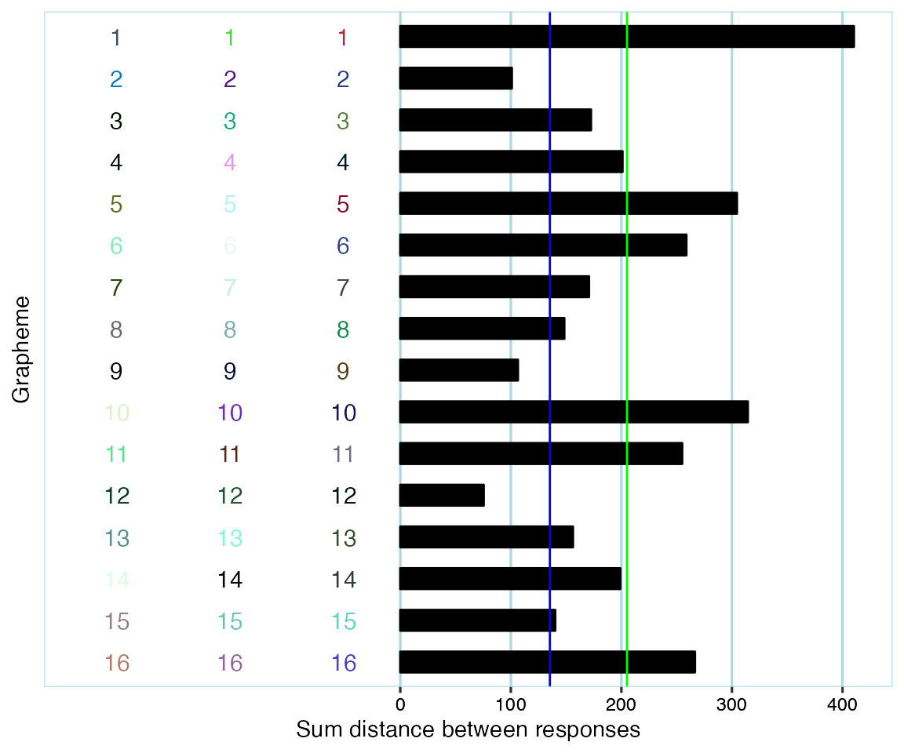
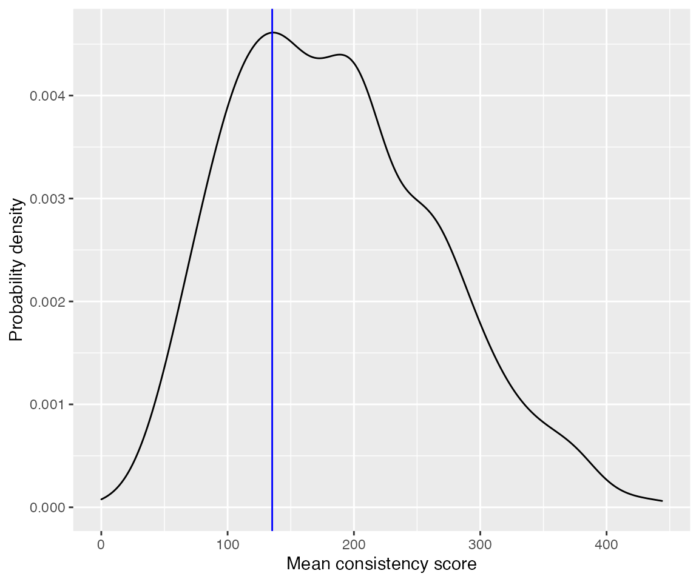
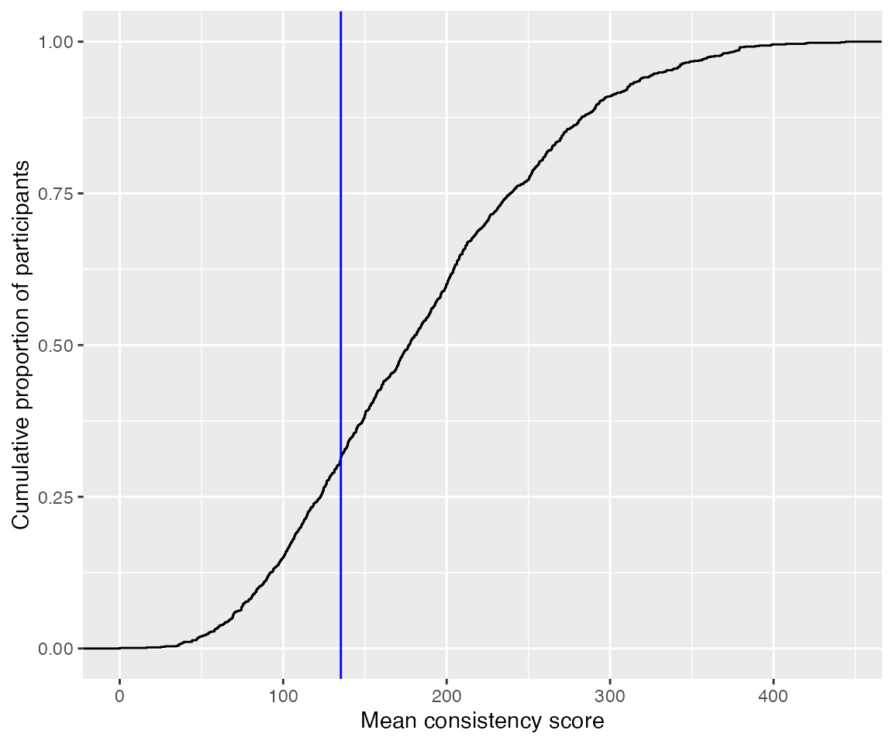

vignettes/dingemanse-data-example.Rmd
dingemanse-data-example.RmdThis is an example of how to use synr with actual data. For an in-depth tutorial which explains how synr works, including the functionality that comes up here, please see the main tutorial.
The data used here are from a study by Cuskley et al. (2019) and are available through this GitHub repository. Note that the user (mdingemanse) who owns the repository is not involved in synr development, so please don’t send questions about synr to him or other co-authors of the article.
The data are from an experiment where participants listened to 16 different recordings of spoken vowel sounds and responded with colors they experienced/associated with the vowels. You can find much more detail in the article and repository. In this tutorial, we’ll assume that each of the recordings can be thought of as a single object, analogous to a grapheme. Note that even though synr always refers to trial stimuli as ‘graphemes’ or ‘symbols’ (in order to make the documentation less abstract), you can apply synr to other types of consistency test data. Just remember that ‘grapheme’ then really means e. g. ‘vowel sound’ or whatever other type of stimuli are presented to participants.
We’ll use tidyr to reformat the raw data, explained below, and ggplot2 for producing custom plots. You should already have ggplot2 installed since synr depends on it, but may you need to run install.packages("tidyr") to get tidyr.
We’ll first download the raw data from GitHub.
# download the 'coloured vowels' data
githuburl <- 'https://raw.githubusercontent.com/mdingemanse/colouredvowels/master/BRM_colouredvowels_voweldata.csv'
dingemanse_voweldata <- read.csv(githuburl, sep=' ')The downloaded data are in a ‘one-row-per-stimulus’ (vocal sound) format. synr needs the data to be in either ‘long’ or ‘wide’ format, as described in the vignette Creating ParticipantGroup objects. Generally, ‘long’ format is preferred, so let’s reformat the data to this.
# 'pivot' the data into a long (one row per observation/trial) format,
# using tidyr's pivot_longer function (and the 'pipe' %>% operator)
cvow_long <- dingemanse_voweldata %>%
pivot_longer(
cols=c('color1', 'color2', 'color3',
'timing1', 'timing2', 'timing3'),
names_to=c(".value", "trial"),
names_pattern="(\\w*)(\\d)",
values_to=c('color', 'timing')
)
print(head(cvow_long))
#> # A tibble: 6 x 6
#> anonid setname item trial color timing
#> <chr> <chr> <int> <chr> <chr> <int>
#> 1 0045dbc0-8936-4c47-b8a2-333f29f3a505 set1 12 1 #A82816 18689
#> 2 0045dbc0-8936-4c47-b8a2-333f29f3a505 set1 12 2 #B2282B 6599
#> 3 0045dbc0-8936-4c47-b8a2-333f29f3a505 set1 12 3 #BB322B 5893
#> 4 0045dbc0-8936-4c47-b8a2-333f29f3a505 set1 9 1 #3C3899 12561
#> 5 0045dbc0-8936-4c47-b8a2-333f29f3a505 set1 9 2 #F44E50 4046
#> 6 0045dbc0-8936-4c47-b8a2-333f29f3a505 set1 9 3 #EE5A3D 7648Note that this might take a couple of minutes, since the data set is quite large.
pg <- create_participantgroup(
raw_df=cvow_long,
n_trials_per_grapheme=3,
id_col_name="anonid",
symbol_col_name="item",
color_col_name="color",
time_col_name="timing",
color_space_spec="Luv"
)We use the L*u*v color space here, since that’s what the article’s authors used.
Let’s produce a plot for the participant with ID “0086e9c0-418c-404c-8f3c-219de93cc3dc” (the raw data use anonymized ID’s, which is why they are rather unwieldy).
example_plot <- pg$participants[["0086e9c0-418c-404c-8f3c-219de93cc3dc"]]$get_plot(
mean_line=TRUE,
cutoff_line=TRUE,
grapheme_size=4
)
# inspect the plot
example_plot
Remember that the ‘grapheme’ axis here is really a ‘recording/vowel sounds’ axis.
The participant appears to have provided valid responses with a fair bit of variation. Their mean consistency score (green line) was slightly above 200, far higher than the cutoff (blue line) of 135.30 that was suggested in Rothen, Seth, Witzel & Ward (2013) for the L*u*v color space.
Of course, it’s not expected that most users will want to produce plots for all participants and look through them one by one. It can however be useful to look at a few of them to get a better feel for the data, or to inspect data more closely if something about a participant’s responses seems off.
Here, we force a mean consistency score to be calculated even where participants have some (but not all) items with less than 3 valid color responses by specifying na.rm=TRUE. We specify that consistency scores should be calculated by using euclidean distances (synr uses euclidean distances default, but it’s specified here for extra clarity).
mean_cons_scores <- pg$get_mean_consistency_scores(
na.rm=TRUE,
method='euclidean'
)We’ll also put the consistency scores in a data frame where scores are linked to their respective participant ID’s:
participant_ids <- pg$get_ids()
cons_score_df <- data.frame(
participant_id=participant_ids,
mean_cons_score=mean_cons_scores
)
print(head(cons_score_df))
#> participant_id mean_cons_score
#> 1 0045dbc0-8936-4c47-b8a2-333f29f3a505 85.22161
#> 2 005c48a4-acb7-4e25-8e4a-447e08a2dc85 225.60228
#> 3 0086e9c0-418c-404c-8f3c-219de93cc3dc 205.05324
#> 4 009f9049-bb4f-4dec-a889-2a408d9b7fc4 84.60556
#> 5 00ac0df1-ee81-4357-86c9-ce8691a6a4f1 171.22806
#> 6 0127d04d-0070-4bec-a004-2e658edac121 227.25244Let’s add information for each participant about the number of graphemes that they provided all-valid (3 non-NA, ie they correctly chose a color) responses for.
num_valid <- pg$get_numbers_all_colored_graphemes()
cons_score_df[['num_allvalid_sounds']] <- num_valid
print(head(cons_score_df))
#> participant_id mean_cons_score num_allvalid_sounds
#> 1 0045dbc0-8936-4c47-b8a2-333f29f3a505 85.22161 16
#> 2 005c48a4-acb7-4e25-8e4a-447e08a2dc85 225.60228 16
#> 3 0086e9c0-418c-404c-8f3c-219de93cc3dc 205.05324 16
#> 4 009f9049-bb4f-4dec-a889-2a408d9b7fc4 84.60556 16
#> 5 00ac0df1-ee81-4357-86c9-ce8691a6a4f1 171.22806 16
#> 6 0127d04d-0070-4bec-a004-2e658edac121 227.25244 16We might want to only include participants who had a minimum of 8 stimuli with all-valid responses.
print(paste('number of participants before filtering:', nrow(cons_score_df)))
#> [1] "number of participants before filtering: 1164"
cons_score_df <- cons_score_df[cons_score_df$num_allvalid_sounds >= 8, ]
print(paste('number of participants after filtering:', nrow(cons_score_df)))
#> [1] "number of participants after filtering: 1105"Once data have been exported to a data frame, they can be used with other libraries as usual.
For example, we might be interested in the distribution of mean consistency scores.
ggplot(cons_score_df, aes(x=mean_cons_score)) +
geom_density() +
geom_vline(xintercept = 135.3, color="blue") +
labs(x='Mean consistency score', y='Probability density')
ggplot(cons_score_df, aes(x=mean_cons_score)) +
stat_ecdf(geom = "step") +
geom_vline(xintercept = 135.3, color="blue") +
labs(x='Mean consistency score', y='Cumulative proportion of participants')
It appears that about 30% of all participants scored below the suggested cut-off of 135.
Almost all of the ‘results’ included here can already be found in the article by Cuskley et al. However, this vignette has hopefully given you an idea of how synr can be used with different types of data, and what role it fulfills.
Cuskley, C.1, Dingemanse, M.1, van Leeuwen, T. & Kirby, S. 2019. Cross-modal associations and synaesthesia: Categorical perception and structure in vowel-colour mappings in a large online sample. Behaviour Research Methods, doi: 10.3758/s13428-019-01203-7
Rothen, N., Seth, A. K., Witzel, C., & Ward, J. (2013). Diagnosing synaesthesia with online colour pickers: maximising sensitivity and specificity. Journal of neuroscience methods, 215(1), 156-160.